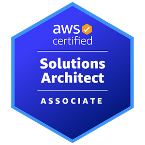

MON–01
Monitoring & Observability
New Relic, Datadog, Grafana, Splunk, ELK Stack, AWS CloudWatch, and LogicMonitor.
Senior NOC Engineer
I serve as the L3 escalation point for P1/P2 incidents across AWS, Linux, and Kubernetes. Leveraging a monitoring-first approach, I have cut MTTR by 25% across major outages, reduced alert noise by 50%, and streamlined global handovers for resilient 24×7 operations.
Senior NOC Engineer with 7+ years of 24×7 production support, serving as the L3 escalation point for P1/P2 incidents across 50+ core services on AWS, Linux, and Kubernetes (EKS), cutting MTTR by 25% across 40+ major incidents. Monitoring specialist in New Relic, Datadog, Grafana, Splunk, and ELK, who eliminated 45% of false positives and cut MTTD by 30% at Comcast, and reduced alert noise by 50% at Freshworks through alert tuning and log-based root cause analysis (RCA). Automation-driven engineer using Python, Bash, and Terraform (IaC) to save ~10 hours weekly in manual toil, backed by 50+ runbooks/SOPs, mentorship of 5 L2 engineers, and an AWS Certified Solutions Architect – Associate credential.
Eight operational domains spanning monitoring, cloud infrastructure, networking, automation, and incident response.
New Relic, Datadog, Grafana, Splunk, ELK Stack, AWS CloudWatch, and LogicMonitor.
AWS (EC2, VPC, EKS), Kubernetes (EKS), Docker, and Terraform (IaC).
Linux (Ubuntu, CentOS), Windows Server administration, patching, and configuration management.
Python, Bash, Git, and ArgoCD for operational automation and deployment rollbacks.
TCP/IP, DNS, HTTP/HTTPS, Load Balancing, Firewalls, and Network Troubleshooting.
ServiceNow, PagerDuty, Jira Service Management for incident tracking and escalation.
Kubernetes (EKS), Docker, health checks, and production deployment support.
VPC, Firewalls, Load Balancers, SSL/TLS, IAM, and network access management.
Three consolidated roles across enterprise streaming, SaaS, and multi-client cloud operations.
Comcast · Chennai, India · Remote
Freshworks · Chennai, India · Hybrid
Cognisive IT Services · Coimbatore, India · Onsite
Hands-on delivery across resilient AWS architecture, Kubernetes, CI/CD, GitOps, and deployment validation.
Architected a multi-AZ environment across two availability zones and six subnets, targeting 99.99% simulated uptime. Least-privilege security groups mitigated 100% of simulated external attack vectors across application and database tiers.
Built self-healing Kubernetes clusters with liveness and readiness probes for zero-downtime rolling updates. Automated vulnerability scanning and immutable image tagging reduced simulated deployment failures by 30%.

Issued November 2023
K.S. Rangasamy College of Technology · Anna University · 2019